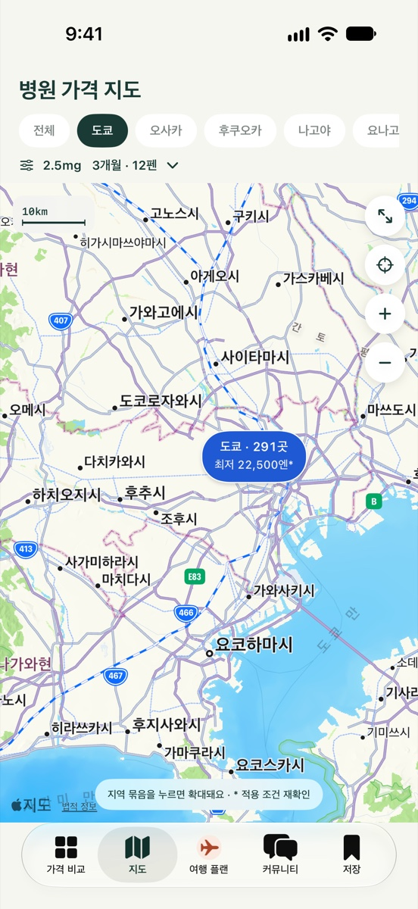

Independent · iOS & web
SushiJaro 스시자로


I built the SwiftUI app, web interface, and data pipeline that turn Japanese clinic price tables into searchable comparisons for people researching Mounjaro prescriptions.
- #9
- South Korea App Store
Free Medical chart - #1
- Japan Mounjaro information apps
Launch-day comparison
Launch day, November 17, 2026 (KST). The #1 result comes from comparing public listings in the Korean App Store’s top 100 free Medical apps that offered pricing and visit information for Japanese clinics prescribing Mounjaro.